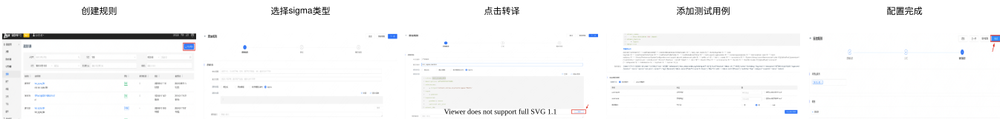
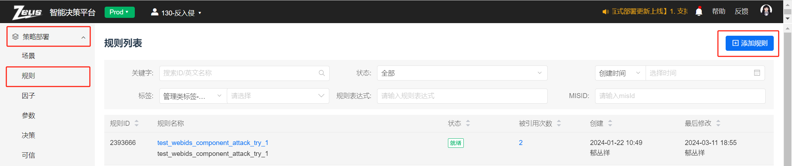
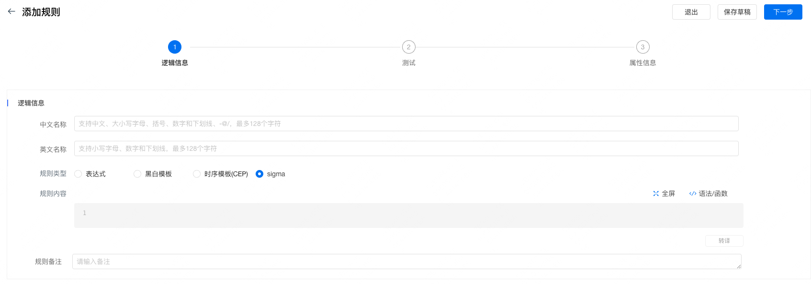
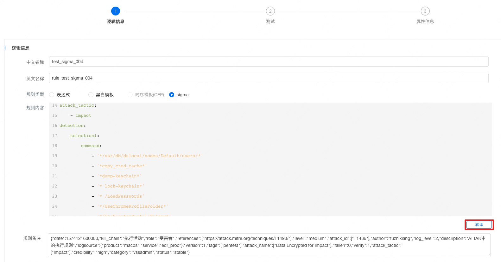
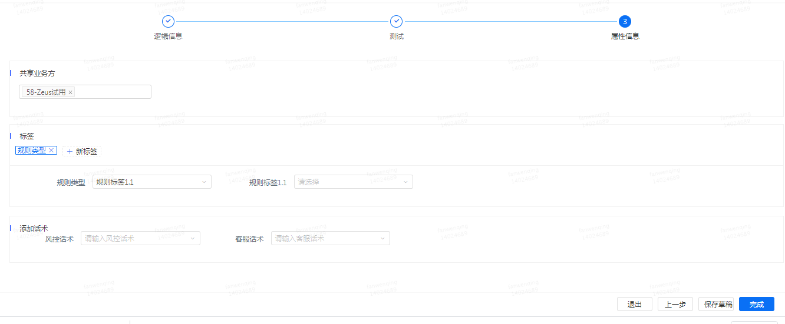
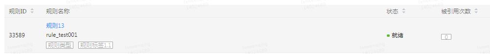
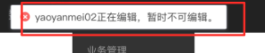

说明：创建/修改规则-sigma类型
一、背景
在办公网络入侵安全领域，使用了大量的sigma规则引擎规则(总量1200+)，sigma规则引擎是一种适用于SIEM系统的通用签名格式，在github上有7w6的fork+star，被MISP、Joe Sandbox、THOR、atomic-threat-coverage等多个知名项目引用，社区中存在近3000条恶意行为检测规则，最大的特点是逻辑结构化表达。使用该引擎可快速迁移社区中的检测规则。
但Zeus上仅支持aviator语言，因此对该类逻辑Zeus支持语言转译。
**只针对businessid=130 空间开通，其他业务空间无改功能。
规则/rule：规则的逻辑由逻辑表达式产生，规则执行的结果是命中（表达式结果为true）/不命中（表达式结果为false），规则的表达式由规则因子组装而成（也只能由因子组装而成）；由因子和参数构成作为逻辑封装的顶层，仅存在True/False两种形态，例如：是不是模拟器的请求。
下文中涉及到的其他名词解释：
属性信息：标签、共享业务方
逻辑信息：表达式、状态、英文名称
强制更新：若本次操作影响线上表达式的执行结果，需先将线上状态取消后再进行操作或者强行变更信息；
二、操作说明
1、操作流程概览

2、操作步骤
step1：入口
策略部署—>规则—>添加规则

step2：添加规则
1、首先填写规则逻辑信息，填写中文名称、英文名称、规则内容，这里展示使用模板配置添加因子

注意
- 英文名称：驼峰命名，且仅支持小写字母，规则命名规范：rule_xxx_yyy_zzz，如rule_mac_is_not_has_owner表示规则是检验mac是否有对应厂商。
- 规则内容配置：sigma语言；
- 点击保持草稿：草稿信息不保持在列表中，当再次点击"添加规则"时，提示有草稿信息可使用或者废弃
2、填写完规则内容后，点击转译添加完成，点击下一步

3、添加完成，点击下一步
4、添加测试用例，测试结果通过，点击下一步

5、添加规则属性信息，单击完成

6、规则列表中出现添加的规则

step3：规则修改
1、修改逻辑信息
对已经在场景中引用 的生效规则会触发变更管控
注意：
此时若有其他人正在编辑该因子，您将收到提示xxmis号正在修改，需xx修改完成/退出编辑状态后，您方可修改。若您着急修改请大象联系该用户退出编辑状态。

同添加规则入口一样，进入规则页面，在规则列表中找到创建的规则，点击规则中文名称，进入更新规则详情页面，点击编辑，即可按照刚刚添加规则的流程对规则进行修改。修改规则仍需要经过测试，并且至少有一条新增的成功的测试用例后方可提交修改，之后启动智能任务。
2、修改属性信息
在规则列表中找到需要修改的规则，并点击规则进入编辑页面。进入编辑页面后，在引导页第三部分“属性信息”中，修改共享信息、标签信息等，修改后点击“提交”，完成修改；